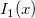
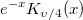
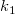
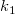

| Date |
Originが日付を表すために内部的に使用しているユリウス通日を返します。 |
| Day |
与えられた日付の日数を返します。 |
| Hour |
0 (12:00 A.M.)から23(11:00 P.M.)までの範囲での整数値として時刻を返します。 |
| Minute |
0から59までの範囲での整数値として分を返します。 |
| Month |
1 (1月)から12(12月)までの範囲での整数値として月を返します。 |
| MonthName |
1から12までのインデックスまたは日付の値で指定した月の名前を返します。 |
| Now |
現在の日付/時刻を日付(ユリウス通日)の値として返します。 |
| Quarter |
現在の時間の四半期を返します。 |
| Second |
0から 59.9999...の範囲での実数値として秒を返します。 |
| Time |
Originが時間を表すために内部的に使用しているユリウス通日を返します。 |
| Today |
現在の日付を日付(ユリウス通日)の値として返します。 |
| WeekDay |
日付の計算に従い、曜日を返します。デフォルトでは、曜日の範囲は0 (日曜日) から 6 (土曜日) です。 |
| WeekNum |
1年のカレンダーでの週番号を示す数字(1から53)を返します。 |
| Year |
0100-9999の範囲での整数値として年を返します。 |
| YearName |
オプションnで年または日付を入力した文字列フォームに年を返します。 |
| char |
コード番号によって指定された文字を返します。 |
| Code |
入力した文字列にはじめの文字に対する数字コードを返します。 |
| Compare |
str1 とstr2を比較し、一致した場合1を返します。 |
| Exact |
両方の文字列が完全一致(大文字小文字、長さ)した場合、 TRUE を返します。 |
| Find |
文字列str1にある、サブ文字列str2のはじまりの位置を返します。大文字小文字を区別して検索します。大文字小文字を区別しない場合、Search関数を使用します。 |
| Format |
LabTalkフォーマットオプションを使用してdoubleを文字列に変換します。フォーマットオプションのデフォルトは"*" で、@SD (有効桁数)を使用し、"*3"は3つの有効桁を表示します。 |
| Left |
この関数は文字列の左端の n 文字までを返します。 |
| Len |
文字列(str)の文字の数を返します。 |
| Lower |
文字列を小文字に変換します。 |
| MatchBegin |
*や?などのワイルドカードを使用した文字パターン(str2)を使用し、文字列(str1)内のサブ文字列の開始位置を返します。 |
| MatchEnd |
*や?などのワイルドカードを使用した文字パターン(str2)を使用し、文字列(str1)内のサブ文字列の終了位置を返します。 |
| Mid |
指定した位置 (n1)ではじまる文字列(str)から指定した数(n2)の文字 を返します。 |
| Replace |
string2のn1番目の位置から始まるstring1に n2 文字を置き換えます。String2 はn2 と異なる長さであることがあります。 |
| Right |
この関数は文字列の右端の n 文字までを返します。 |
| Search |
文字列(str1)内のサブ文字列(str2)位置を返します。大文字小文字の区別はしません。大文字小文字を区別する場合、Find関数を使用します。 |
| Substitute |
string1にstring3があった場合、string3をstring2と置換えます。 n=0 はすべて、そうでない場合はn個インスタンスを置き換えます。 |
| Trim |
文字列からスペースを除きます。 |
| Upper |
大文字に変換します。 |
| Betapdf |
パラメータ aとbを持つベータ分布の確率密度関数を返します。 |
| Binopdf |
パラメータ nとpを持つ二項分布の確率密度関数を返します。 |
| Cauchypdf |
位置パラメータaと、スケールパラメータbのcauchy分布の、X内の値でしょうか されるpdfを返します。 |
| Exppdf |
Xでの値で評価される平均値パラメータ lambdaの指数分布の確率密度プロットを返します。 |
| Gampdf |
Xの各値における、形状パラメータaおよび、スケールパラメータbのGamma確率密度を返します。 |
| Ks2density |
スケール(wx,wy)を使用した関数についての、(x,y) 点での2Dカーネル密度を返します。 |
| Ksdensity |
与えられたベクトルvXのxにおけるバンド幅wのカーネル密度を返します。 |
| Lappdf |
位置パラメータaと、スケールパラメータbのlaplace分布の、X内の値でしょうか される確率密度関数を返します。 |
| Lognpdf |
分布パラメータmuとsigmaを持つ対数正規確率密度関数のXでの値を返します。 |
| Normpdf |
平均値 mu と 標準偏差 sigmaを持つ正規分布を使ってXでの各値のpdfを計算します。 |
| Poisspdf |
lamdaでの平均値パラメータを使って、Xの各値のPoisson 確率密度関数を計算します。 |
| Wblpdf |
パラメータ aとbを持つワイブル分布の確率密度関数を返します。 |
| abs |
数字の絶対値を返します。 |
| acos |
逆余弦の値(ラジアン)を返します。 |
| Acosh |
逆双曲線余弦を返します。 |
| Angle |
ラジアンでの角度を返します。 |
| Asin |
対応する三角関数の逆を返します。 |
| Asinh |
逆双曲線正弦を返します。 |
| Atan |
対応する三角関数の逆を返します。 |
| Atanh |
逆双曲線正接を返します。 |
| Beta |
次の形式のベータ関数: beta(a, b). |
| Cos |
与えられたxの各値の余弦の値を返します。 |
| Cosh |
cosh(x) 関数はcos(x) の双曲線形式です。 |
| Degrees |
ラジアンを度に変換します。 |
| Exp |
xの指数値を返します。 |
| IncBeta |
不完全ベータ関数 |
| incf |
不完全Fテーブル関数 |
| Int |
xの切り捨て整数値を返します。例) int(7.9) = 7 |
| Inverf |
xでの逆誤差関数を計算します。 |
| J0 |
ゼロ次のベッセル関数です。 |
| J1 |
一次のベッセル関数です。 |
| Jn |
n次のベッセル関数(nは整数)です。 |
| Ln |
xの自然対数を返します。 |
| Log |
底10のxの対数を返します。 |
| Mod |
整数 xを整数 yで除算した余り(剰余)を返します。 |
| Nint |
返されるnint(x)関数の値は、round(x, 0)と等しい値です。 |
| Prec |
有効桁数 p で値(データセット)を返します。 |
| Rmod |
実数 xを実数 yで除算した実数の余り(剰余)を返します。 |
| Round |
小数桁数 n で値(またはデータセット) を返します。 |
| Sin |
与えられたxの各値の正弦の値を返します。 |
| Sinh |
sinh(x) 関数はsin(x) の双曲線形式です。 |
| Sqrt |
sqrt(x) 関数はxの平方根を返します。 |
| Tan |
与えられたxの各値の正接の値を返します。 |
| Tanh |
tanh(x) 関数はtan(x) の双曲線形式です。 |
| Y0 |
第二種のゼロ次ベッセル関数です。 |
| Y1 |
第二種の一次ベッセル関数です。 |
| Yn |
第二種のベッセル関数です。 |
| Radians |
度をラジアンに変換します。 |
| Distance |
2点間の距離を返します。 |
| Distance3D |
3次元の2点間の距離を返します。 |
| Angleint1 |
2つのポイント(x1, y1)と(x2, y2)を結ぶ線と、X軸の間の角度を返します。n=1の場合、単位は度となり、n=0の場合、単位はラジアンとなります。デフォルトはラジアンです。 |
| Angleint2 |
2つの線の角度を返します。n=1の場合、単位は度となり、n=0の場合、単位はラジアンとなります。デフォルトはラジアンです。 |
| Airy_ai |
エアリー関数 Ai(x) の近似を評価します。 |
| Airy_ai_deriv |
エアリー関数 Ai(x) の微分の近似を評価します。Chebyshev 拡張の数を基にしています。 |
| Airy_bi |
エアリー関数 Bi(x) の近似を評価します。 |
| Airy_bi_deriv |
エアリー関数 Bi(x) の微分の近似を評価します。Chebyshev 拡張の数を基にしています。 |
| Bessel_i_nu |
第一種修正ベッセル関数I/4 (x)の近似値を評価します。ここで、v=-3, -2, -1, 1, 2 または 3 でxは正の実数です。 |
| Bessel_i_nu_scaled |
第一種修正ベッセル関数 ") の近似値を求めます。ここで、order=-3, -2, -1, 1, 2 または 3 でxは正の実数です。 の近似値を求めます。ここで、order=-3, -2, -1, 1, 2 または 3 でxは正の実数です。 |
| Bessel_i0 |
第一種修正ベッセル関数の近似値 I0(x)を求めます。 |
| Bessel_i0_scaled |
式の近似値を求めます。ここでIOは、 第一種修正ベッセル関数です。 |
| Bessel_i1 |
第一種修正ベッセル関数の近似値  を求めます。 |
| Bessel_i1_scaled |
式") の近似値を求めます。ここでは、 第一種修正ベッセル関数です。 の近似値を求めます。ここでは、 第一種修正ベッセル関数です。 |
| Bessel_j0 |
第一種ベッセル関数の ") を評価します。 を評価します。 |
| Bessel_j1 |
第一種ベッセル関数の近似値 ") を求めます。 を求めます。 |
| Bessel_k_nu |
第二種修正ベッセル関数 ") の近似値を求めます。ここで、order=-3, -2, -1, 1, 2 または 3 でxは正の実数です。 の近似値を求めます。ここで、order=-3, -2, -1, 1, 2 または 3 でxは正の実数です。 |
| Bessel_k_nu_scaled |
第二種修正ベッセル関数  の近似値を求めます。ここで、 =-3, -2, -1, 1, 2 または 3 でxは正の実数です。 |
| Bessel_k0 |
第二種修正ベッセル関数の近似値 ") を求めます。 を求めます。 |
| Bessel_k0_scaled |
式") の近似値を求めます。ここでは、 第二種修正ベッセル関数です。 の近似値を求めます。ここでは、 第二種修正ベッセル関数です。 |
| Bessel_k1 |
第二種修正ベッセル関数 ") の近日を評価します。 の近日を評価します。 |
| Bessel_k1_scaled |
式") の近似値を求めます。ここでは、 第二種修正ベッセル関数です。 の近似値を求めます。ここでは、 第二種修正ベッセル関数です。 |
| Bessel_y0 |
第二種ベッセル関数Y0を評価します。 |
| Bessel_y1 |
第二種ベッセル関数Y1を評価します。 |
| Cos_integral |
") を評価します。 を評価します。 |
| Cumul_normal |
累積正規分布関数を計算します。 |
| Cumul_normal_complem |
累積正規分布関数の補数に対する近似値を計算します。 |
| Elliptic_integral_rc |
x ≥ 0 および y ≠ 0における積分の近似値を計算します。 |
| Elliptic_integral_rd |
xの最大でyはゼロ、z > 0でのxにおける積分地の近似を計算します。 |
| Elliptic_integral_rf |
x, y, z ≥ 0で、最大のものがゼロの積分の近似を計算します。 |
| Elliptic_integral_rj |
x, y, z ≥ 0で、 ≠0 、x,y,zの最大のものがゼロの積分の近似を計算します。 ≠0 、x,y,zの最大のものがゼロの積分の近似を計算します。 |
| Erf |
誤差関数(または正規誤差積分)を計算します。 |
| Erfc |
誤差関数の補数に対する近似値を計算します。 |
| erfcinv |
指定したyの逆相補誤差関数の値を計算します。 |
| erfcx |
スケーリング相補誤差関数を計算します。 |
| erfinv |
逆誤差関数を計算します。 |
| Exp_integral |
") を評価します。 を評価します。 |
| Fresnel_c |
フレネル積分の近似を計算します。 |
| Fresnel_s |
Chebyshev 拡張をベースにしたフレネル積分の近似を計算します。 |
| Gamma |
") を評価します。 を評価します。 |
| Incomplete_gamma |
正規化された不完全ガンマ関数を評価します。 |
| jacobian_theta |
ヤコビのテータ関数の一つの値を計算します。 |
| Kelvin_bei |
ケルビン関数 bei xの近似を評価します。 |
| Kelvin_ber |
ケルビン関数 ber xの近似を評価します。 |
| Kelvin_kei |
ケルビン関数 kei xの近似を評価します。 |
| Kelvin_ker |
ケルビン関数 ker xの近似を評価します。 |
| Log_gamma |
Chebyshev 拡張に基づき、x > 0 の") を評価します。 を評価します。 |
| Real_polygamma |
psi関数ψ(x)のk次導関数の近似を計算します。 |
| Sin_integral |
Si = sin_integral(x) を評価します。 |